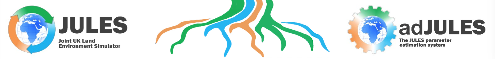

Home
About
Code
Results
CLARION
Publications
Contact
Contact.
The adJULES system is a work in progress. Please do not hesitate to contact us if you would like to suggest additions or changes, or require help:
Tim Jupp: T.E.Jupp@exeter.ac.uk.
Nina Raoult: N.M.Raoult@exeter.ac.uk.